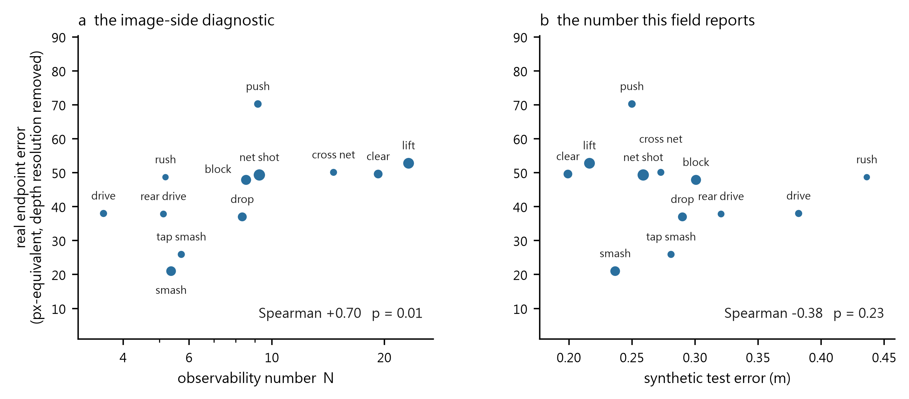

SimTrack3D: Monocular 3D Trajectory Prediction of Fast-Moving Shuttlecocks via Broadcast-Calibrated Sim-to-Real Transfer
Paper 1 of 2 · Project page · 2026

Demo
Abstract
Recovering the continuous 3D flight of a shuttlecock from a single broadcast video is a critical yet unsolved problem in sports vision. Monocular estimation in badminton is governed by three extreme physical constraints: the object is exceptionally small (spanning about 6.9 px across a 1280 × 720 frame, with no resolvable texture), exceptionally fast (record smashes exceed 400 km/h, leaving roughly 15 nearly straight frames in projection), and it never bounces during rally play, which deprives the system of the deterministic ground-plane contact anchor exploited in table tennis and tennis. Because open 3D ground truth for broadcast badminton does not exist, published methods validate real-footage 3D with 2D reprojection error alone. We show that this metric has a severe blind spot: on synthetic strokes with known 3D truth, candidate trajectories whose 2D residuals differ by only 0.07–0.20 px differ in true 3D error by up to 46× for smashes.
To get past that identifiability barrier we present SimTrack3D, a physics-grounded sim-to-real framework. First, addressing the focal length left undetermined by a coplanar court homography, we calibrate ten international broadcast setups end to end from the court lines and the net cord, and gate each result on the cord's catenary sag — a physical invariant the fit never sees. Second, anchoring to 13,117 real annotated tournament strokes, we solve aerodynamic boundary-value problems under quadratic drag to synthesise 78,702 physically valid 3D trajectories, projected through the measured cameras. From these we train Shuttle3D, a 2.70M-parameter transformer that predicts relative depth along world-space viewing rays, followed by a constrained single-launch-state physics refinement.
Shuttle3D reaches 0.244 m median 3D error on held-out synthetic strokes and 85.0% physical validity on real tournament footage, rising to 99.3% after refinement, against 55.6% for a faithful re-implementation of MonoTrack on identical tracks and cameras. Finally we derive an image-only observability number N that predicts the Cramér–Rao bound (CRLB ∝ N−0.98, R² = 0.83), and show that the lifter beats that unbiased bound by up to 6.6× exactly where N is lowest — the signature of a prior, not of information recovered from the image.
1. Introduction
Deep heatmap trackers such as TrackNet have made 2D localisation of high-speed projectiles reliable.[1, 2, 3] Lifting those tracks into continuous 3D world trajectories remains ill-posed. In classical monocular 3D vision — driving, human mesh recovery — depth ambiguity is resolved through known object dimensions, structural articulation or texture deformation. In broadcast badminton every conventional depth cue vanishes at once.
Small kills the appearance cue. In our measurements a shuttlecock spans about 6.9 px in a 1280-wide broadcast, elongating to 17 px only as a motion streak. It has no surface texture, no discernible orientation and no geometric scale: it behaves as a featureless point mass, so no isolated frame contains depth information at all.
Fast kills the motion cue. Resolving depth along a viewing ray requires trajectory curvature from gravity and drag. A smash lasts roughly 10–15 frames at 30 fps and travels nearly along the optical axis, so the projected track is close to a straight line and the physical curvature is buried in tracker noise.
Never bouncing kills the geometric anchor. In tennis and table tennis a bounce on a calibrated plane fixes one 3D point exactly, and systems such as TT3D are built on it.[4, 5] A shuttlecock is airborne from racket to racket; its only floor contact ends the rally, at a moment where trackers routinely lose it.

SimTrack3D grounds every stage of the simulator in authentic broadcast geometry and human tactical play rather than sampling camera parameters and flight arcs from assumed ranges.
- Broadcast-calibrated geometry. A calibration that resolves the focal-length ambiguity of coplanar court lines using the net cord, recovering intrinsics and extrinsics across twenty international venues, ten of them with no supplied homography, each gated on the cord's 26 mm catenary sag.[6, 7, 8]
- Aerodynamically anchored sim-to-real. 77,790 3D trajectories synthesised by anchoring quadratic-drag boundary-value problems to 13,117 real annotated strokes, each drawn from eight launch-height candidates and kept only if the resulting flight clears the cord, stays above the floor and peaks below the roof.
- Shuttle3D: a ray-depth lifter, and an estimator that cannot return an impossible flight. A 2.70M-parameter sequence transformer on world-space viewing rays, followed by a constrained single-launch-state solve whose output satisfies the court's rules by construction.[9, 10] Physical possibility rises from 59% to 100% on real tournament footage, and endpoint accuracy improves at the same time, for a median cost of 1.4 px in reprojection error.
- Observability theory, and its limit. An image-computable number N that tracks the Cramér–Rao bound on synthetic data and exposes where a learned model is answering from its prior rather than from the image.[11, 12] We also report the negative result that neither N nor held-out synthetic error predicts which strokes fail on real footage — which is precisely why the guarantee above is enforced rather than monitored.
2. Related work
This section is organised by the problem each literature solves rather than by venue, because the difficulty here is that no single community owns it: the tracker comes from sports vision, the depth ambiguity from monocular geometry, the training data from the sim-to-real literature, the calibration from sports field registration, and the guarantee from constrained estimation.
2.1 Tracking a small, fast object in 2D
The 2D half of this problem is solved well enough to build on. TrackNet[1] established the recipe still in use: a heatmap network consuming several consecutive frames so that motion, not appearance, localises an object too small to have texture. Successors extend it with trajectory-aware refinement and rectification[2] and with motion attention[3], and the same architecture family has been retargeted to soccer[13], table tennis[14] and to a sport-agnostic baseline[15]. Speed-accuracy trade-offs for ball detection are surveyed in[16], and the general difficulty of small-object detection and tracking in[17].
What matters for us is that a broadcast shuttlecock is not a point but a streak. Motion blur is treated as a nuisance to be removed in general vision[18], but in racket sports it carries information: BlurBall[19] estimates ball position and blur jointly and shows the streak improves localisation, and blur-aware detection has been applied to broadcast sport directly[20]. Our own measurements on 9,312 annotated shuttlecock positions agree: the streak's long axis grows linearly with image speed while its short axis is constant to 0.20 px, which is what makes exposure self-calibrating from the video alone. Badminton-specific detectors continue to appear[21][22][23], including real-time smash-speed estimation on device[24].
Multi-object tracking metrics and player tracking are adjacent but distinct problems[25][26][27][28]; we use annotation for stroke segmentation rather than tracking players.
2.2 Monocular 3D trajectory reconstruction in racket sports
Reconstructing 3D ball flight from one view is an established goal with a consistent structure: fit a physical flight model to a 2D track through a calibrated camera. Early table-tennis systems reconstructed trajectories for performance analysis[29][30][31]; robot table tennis needs the same estimate in real time and solves it with filtering[32][33][34]. Multi-camera systems avoid the ambiguity entirely[35] and are therefore not comparable.
The closest work to ours is MonoTrack[36], which reconstructs badminton shuttle trajectories from monocular video by fitting a per-shot launch state and drag coefficient under a reprojection loss. We re-implement it faithfully as our baseline. In table tennis the same idea has been pushed further: TT3D[4] uses the bounce on a calibrated table as a hard geometric anchor, TT4D[5] builds a pipeline and dataset for 4D reconstruction from monocular video, and Uplifting Table Tennis[37] trains a transformer on synthetic trajectories to lift 2D tracks to 3D with spin. Related efforts recover 3D localisation from 2D labels using physics[38], estimate spin from broadcast footage[39], reconstruct a ballistic shot from a monocular broadcast[40], and localise a soccer ball in real time from a single camera[41][42].
Two of these deserve separate mention because they share our strategy. SynthNet[43] and "Where Is The Ball"[44] both train on synthetic trajectories and represent the input in a camera-independent form; the latter reports an ablation showing that a canonical ray representation outperforms domain-randomised pixel input, which is independent support for the parameterisation we adopt. The gap we address is not that these methods lift badly. It is that every one of them validates on real footage with a proxy — reprojection error, a landing tile, a bounce or net consistency check — and none reports whether that proxy can pass while the 3D is wrong.
Badminton has also been studied without 3D reconstruction: shuttlecock trajectory prediction from player context, stroke and skill modelling with transformers[45], self-play simulation of the game[46], and event-camera reconstruction of swing dynamics[47]. Earlier work estimated shuttle trajectory from motion blur in a single image[48], which is the same physical signal we exploit for exposure.
2.3 Sim-to-real transfer: what the field actually does
Training on synthetic data and deploying on real data is a mature field with a small number of distinct mechanisms, and it is worth being precise about which one we use.
Domain randomisation makes the simulator's nuisance parameters so variable that the real world looks like one more sample[49]. It underlies CAD2RL[50] and drone racing[51], has been given structure by conditioning on scene context[52], analysed theoretically[53], benchmarked[54], and applied to object detection for robotics[55]. Its known failure mode is that the randomisation range must bracket the real value; when it does not, no amount of variety helps.
Real-to-sim, or system identification, takes the opposite route: measure the real system and set the simulator to match. SimOpt closes the loop by updating the simulation distribution from real rollouts[56], sim-to-sim canonicalisation trains a mapping to a canonical rendering[57], residual physics learns the part of the dynamics the model misses[58], and differentiable simulators fit parameters by gradient[59][60][61][62]. Sensor-level realism can be identified the same way[63][64].
Domain adaptation aligns features or pixels using unlabelled real data: adversarial feature alignment[65][66], entropy minimisation[67], self-training and co-training[68][69][70], statistical alignment[71], frequency-domain transfer[72], and standard benchmarks[73]. We use none of it. Our model never sees real video during training, which is a limitation we state rather than a design virtue.
Image-level translation refines synthetic images towards realism[74][75], optionally with a task-consistency term[76]. Photorealism is the competing school: photorealistic synthetic datasets[77][78][79], physically based rendering pipelines[80][81][82][83], and applications from spacecraft pose[84] to street scenes[85]. Reviews of synthetic-data generation[86][87] and of how a transfer budget should be spent[88] survey the trade-offs. Mixing a little real data in is often the cheapest win of all[89].
Our approach sits in the real-to-sim family and is unusually literal about it: rather than randomising camera parameters over an assumed range, we measure ten real broadcast cameras and sample only from those, and rather than sampling flights from a prior, we solve boundary-value problems anchored to 13,129 annotated strokes from real matches. What we do not do is close the loop — our identification is one-shot, not iterative as in SimOpt.[56]
2.4 Synthetic data for sports vision
Synthetic data has reached sport recently and mostly for detection rather than 3D: SoccerSynth-Detection renders soccer scenes to train player detectors[90] and SoccerSynth Field does the same for field detection[91]. Virtual environments have long been used to study sports skill itself[92]. The 3D-trajectory works of §2.2 that train on synthetic flights[43][37][44] are the closest precedents for what we build, and they differ from us mainly in how the camera distribution is chosen.
2.5 Camera calibration for broadcast sport
A planar court gives a homography, and a homography does not determine focal length: this is the classical degeneracy of plane-based calibration[6], and it is why single-view calibration usually recruits extra structure such as vanishing points[93][94][95][96] or a learned prior[97]. Sports field registration is now a field of its own, with keypoint- and line-based methods[7][98][8][99][100], graph-based homography estimation[101], sequential Bayesian estimation across a video[102], and a benchmark protocol[103].
Almost all of this work registers the ground plane, which is exactly the part that does not constrain focal length. Our contribution is to recruit the net cord — the only rigid off-plane structure a badminton court offers — and, separately, to gate each calibration on the cord's catenary sag, a physical invariant the fit never sees.
2.6 Physically constrained reconstruction
Enforcing physics on a monocular reconstruction is well established for humans: scene constraints resolve pose ambiguity[104], gravity constrains human-object reconstruction[105], trajectory optimisation enforces physical consistency on pose sequences[106], and physical plausibility can be built into prediction[107]. Physics-informed learning more broadly is surveyed in[108][109][110][111].
The distinction that matters here is soft versus hard. Most of the work above adds physics as a loss term, which can always be traded away. Enforcing constraints exactly is a separate literature: constrained Kalman filtering projects the unconstrained estimate onto a feasible set[9], differentiable optimisation layers embed a constrained solve inside a network[112], and architectures exist that satisfy hard constraints by construction[10]. We take the projection route, applied per stroke to a six-parameter flight, and we report what feasibility costs in reprojection error rather than only that it was achieved.
2.7 Observability, degeneracy and estimation bounds
That a monocular view leaves depth weakly determined is not news; what is useful is to quantify it per stroke. Bundle adjustment has long treated the null space of the normal equations as a first-class object — gauge freedom, handled by minimum-norm steps[11]. In filtering, the observability-constrained EKF identifies the same kind of unobservable subspace in order to protect it from spurious information[113], and observability-aware trajectory optimisation plans motions that make states observable[12]. Visual-inertial estimators must handle the same degeneracies[114].
We use that subspace differently: not to protect it and not to plan around it, but as the place to look for a physically feasible solution, on the argument that moving there is nearly free in image terms. We pair this with a Cramér–Rao bound on the six launch parameters, which turns "this stroke is hard" into a number that can be compared against what a model actually achieves.
2.8 Does in-distribution error predict real-world performance?
Our central negative result runs against a well-supported regularity. "Accuracy on the Line" reports a strong linear relationship between in-distribution and out-of-distribution accuracy across many benchmarks[115], and where that relationship holds, a synthetic test set would be a fair guide. But it is not universal: in-distribution and out-of-distribution performance are sometimes inversely correlated[116], and underspecification explains why two models with identical validation loss can behave differently under shift[117]. Metrics designed for the sim-to-real gap itself have begun to appear[118].
The closest precedent for our diagnosis is in human pose: physical plausibility can be measured without ground truth by simulating the result[119], and that work also finds its own plausibility proxy does not track accuracy reliably — the same shape of result we obtain for net clearance. Reference-free consistency assessment is being explored for generated video as well[120]. Our contribution here is the sharper, rank-order version of the claim, measured on 6,914 real strokes: across stroke types, held-out synthetic error carries no usable signal about real-footage error, and neither does the image-side observability number.
2.9 Shuttlecock aerodynamics
The flight model we integrate rests on a well-characterised object. The shuttlecock's drag coefficient, terminal velocity and strongly asymmetric trajectory have been measured in wind tunnels and free flight[121][122][123][124][125][126][127], simulated[128][129], and summarised for the sport as a whole[130]. A terminal velocity near 6.8 m/s and a drag-dominated, markedly asymmetric arc are what make a badminton flight identifiable from a short observation at all, and they are also why a ballistic parabola is not an adequate model.
3. Method

3.0 The algorithm
What follows is one loop, not a pipeline of stages. Each step exists because a measurement showed the previous one was insufficient, and the loop closes because the last step supplies training signal to the first.
| step | what it does | why it is needed |
|---|---|---|
| measure | Recover each broadcast camera from the court lines and the net cord, and estimate the real distribution of strokes from match annotation. | A coplanar court leaves focal length undetermined, and real broadcast geometry lies outside the ranges other synthetic pipelines sample (§5.1). |
| propose | A network trained on flights anchored to that distribution proposes a depth along each viewing ray. | The image alone does not determine depth: the Cramér–Rao bound varies 16× across stroke types and exceeds 1 m for the shortest arcs (§4). |
| dispose | Project the proposal onto the set of flights the court permits, as hard inequalities on a single launch state, searching the directions the image constrains least. | 41% of the network's real-footage reconstructions break a rule the stroke's own existence forbids; a penalty term does not stop that, because a penalty can be paid (§3.4). |
| weigh | Score each stroke by the reprojection residual of the fitted flight and by the price the projection paid in pixels. | Both are computable with no ground truth, and on real strokes they track true endpoint error where nothing else we tested does (§6.1). |
| close | Retrain the proposer on the projections it can trust, so the physics moves from a test-time solve into the prior. | Labelled synthetic plus unlabelled real is precisely the setting self-training addresses; its usual failure, confirmation bias, is what the projection and the weighting defend against (§3.5). |
The principle underneath is a division of labour that the observability analysis makes explicit rather than assumes. The image fixes what it can, the prior supplies what the image cannot, physics deletes what the prior gets wrong, and the disagreement between prior and physics is the only supervision real footage can give. Everything in this section is an instance of that sentence.
Stated as an estimator: let u1..K be the tracked pixels of one stroke, P the calibrated camera, and Ω the set of launch states whose flight satisfies the court's rules. The proposal step gives a prior mean X̂; the disposal step returns
s* = argmins ∈ Ω [ reprojection(s) / σ2D2 + ρ( distance(s, X̂) / σprior2 ) ]
and the closing step adds { (u, s*) : residual(s*) ≤ τ } to the training set of the proposer. The loop is the composition, and one pass of it is what we evaluate.
3.1 Catenary net-cord model and non-coplanar calibration
The painted boundary lines of a badminton court lie on the ground plane Z = 0. A planar homography maps court coordinates to image coordinates:
Because the lines are coplanar the homography carries only eight degrees of freedom, leaving the focal length coupled to elevation and distance. Evaluating Zhang's two constraints on this footage yields a 65% discrepancy in the focal estimate. Non-coplanar structure is required to decouple intrinsics from extrinsics.
The net cord supplies it. Under BWF specification the cord is fixed at post height 1.55 m and sags to 1.524 m at the centre, an invariant vertical displacement of 26 mm. In a frame centred on the net plane the cord is a catenary:
and because the sag is small relative to the net width L = 6.10 m, a second-order expansion is exact to well below a pixel:
Using sub-pixel ridge detection on player-free temporal median backgrounds we extract court-line points (167–312 per image) and net-cord samples (270 per image, 0.14 px fit residual). Calibration is a joint non-linear fit of the pinhole camera to both sets:
where d⊥ is the orthogonal point-to-line distance and π the pinhole projection. The court plane alone would fit any camera exactly, since a plane-to-image map is an 8-DoF homography; the off-plane cord is what makes the problem determined.
Physical validation gate
The sag is deliberately withheld from the fit and used afterwards as an independent check:
This rejects degenerate minima whose 2D residual is excellent but whose implied 3D geometry is not: three venues fitted the cord to 0.2–0.4 px yet implied sags of 9, −15 and −49 mm. Across the ten venues that pass, the measured median sag is 23.5 mm. A fit residual proves you fitted something; only an independent physical invariant proves you fitted the right thing.


Venues with no homography at all. The ten venues above came with a court homography from their dataset. A second corpus, the 35-match TrackNetV3 collection, supplies per-frame 2D shuttle truth and a player-free median background for each venue but no court annotation of any kind, and it is exactly the case a deployed system faces. Calibrating it needs an initial guess and a fit that cannot be fooled by the court's own symmetry. The guess is a small keypoint regressor trained by projective augmentation of the calibrated venues. The fit is an iterative closest-line refinement of the homography to the painted lines, run from that guess and from its lattice-aligned neighbours (the court moved by one line spacing, 0.46 m sideways or 0.76 and 1.98 m lengthways), because a court shifted by one line spacing still puts most of its lines on paint and a ridge count cannot tell the two apart. What can is coverage: the fraction of each of the twelve model lines that lies on white, which collapses for the shifted court because whole lines land on bare floor. The net cord is then found by scanning the one unknown that moves it — the focal length — and scoring the cord curve each candidate implies against the ridge map, with the far court's ground lines masked out since the homography places them exactly. Everything after that is the fit and the sag gate already described. Three venues were practice halls with the court running off the frame and were discarded before calibration; of the remaining 26, 10 pass every gate at a median joint residual of 1.21 px and sags of 16–29 mm, and 16 are rejected, most because the near baseline leaves the frame or the net is too small to raise a ridge. Rendering each passing camera in Blender over its real frame shows the lines and the net coincide (Fig. 3c). The measured camera set therefore grows from ten to twenty.

3.2 Aerodynamic boundary-value trajectory synthesis
A tournament shuttlecock experiences strong non-linear drag. With state s(t) = [x(t), v(t)]:
with terminal velocity vT = 6.8 m/s, so γ ≈ 0.212 m−1. Rather than sampling flight arcs, every trajectory is anchored to a real annotated stroke. Given the annotated horizontal start and end positions and the flight time T of 13,117 real match events, the unobserved vertical profile is a two-point boundary-value problem:
with launch and arrival heights bounded by stroke-specific priors. We solve it by shooting: with the terminal residual
where the forward map is RK4, we form the sensitivity Jacobian and take damped Newton steps:
Across 24,000 solves, 99.8% converge. Projecting through the ten measured cameras with σ = 2 px tracker noise and 5% frame dropout yields the training sequences, split by anchor so that no real stroke appears on both sides.
A silent data bug, and what it cost. Launch and arrival heights are not annotated, so the first build of this dataset drew them from a class prior and kept whatever the solver returned. Auditing the stored trajectories afterwards showed that 10.6% of them pass under the cord — flights that cannot have happened, since every anchored stroke was played and returned. The failures concentrate exactly where the margin is thin: 19.9% of net shots, 14.2% of pushes, 11.3% of blocks, against 0.0% of clears. Nothing in training or in synthetic-test error revealed this; the model simply learned a depth prior that admits impossible flights, and the synthetic test set, sharing the same prior, scored it as correct.
The corrected build draws eight height candidates per stroke, solves them in one batched pass, and keeps a candidate only if its flight clears the cord by 0.02 m where it crosses, stays above the floor and peaks below 12 m. Strokes with no feasible candidate are dropped rather than kept as impossible supervision. The result is 77,790 sequences with 0.00% passing under the cord. Retraining on it changes held-out synthetic error very little (0.273 vs 0.279 m median), which is the point: a synthetic benchmark cannot see this class of error at all.
3.3 Shuttle3D: ray-depth transformer
To generalise across camera geometries, Shuttle3D operates on world-space viewing rays rather than screen coordinates. For a detection pt = [ut, vt] the unit ray is
and its intersection with the floor plane is
Each frame becomes a seven-dimensional feature: the three ray components, the two normalised floor-intersection coordinates, a near-horizontal indicator and time. The camera centre enters once as a global token. A six-layer transformer encoder (dmodel = 192, eight heads, feed-forward 768) outputs a relative depth dt along the ray, and the 3D point follows geometrically:
Calibration therefore lives in the geometry rather than being relearned, which is what lets one model serve cameras from 12 to 39 m away. Depth, not height, is the output: 1.9% of frames look up at the shuttle from these 4.9–13.3 m cameras, and a height parameterisation diverges there. The model has 2.70M parameters and is trained with an L1 loss on 3D position for 40 epochs, about 24 minutes on one RTX 3090.
Two implementation notes, because they change results and are easy to get wrong. The dataset is split by anchor: one real stroke is replayed through several cameras and heights, so a random split puts near-duplicates on both sides and flatters the model. And features are placed at their true frame indices, gaps included; packing the tracked frames contiguously changes the real-footage numbers materially (§6.2).
3.4 Reconstruction that is physically possible by construction
Per-frame depths have no temporal coupling, so the raw 3D track jitters and does not look like a flight. Worse, it need not be a flight a badminton court permits: on real footage 39.5% of the lifter's strokes break a rule the stroke's own existence forbids, passing under the cord, through the floor, or never reaching the other half although an opponent returned it. Penalising those events does not fix them, because a penalty can always be paid.[9, 112]
We replace the per-frame output with a single launch state s0 ∈ ℝ6 integrated under the same drag model and fitted to the image and to the lifter at once,
with σ2D = 2 px and σprior = 0.5 m, subject to the court's rules as hard inequalities rather than penalties:
The Huber transform is applied to the prior term only, so a few bad lifter frames cannot drag the fit while the data term and the constraints stay quadratic.
The crossing rule is a definition, not an inference. A player may not strike the shuttle over the opponent's court, so consecutive hits are on opposite sides and every stroke a rally continues from crosses the net plane. This follows from stroke segmentation, which our method already assumes and which MonoTrack also assumes through its hit detector.[36] It is not read off the annotation: across all 13,168 consecutive hit pairs in the dataset the annotation agrees 96.0% of the time, and the 4.0% that disagree lie a median of 0.45 m from the net line against 1.95 m for the rest, so the disagreement measures the annotation's precision near the net rather than the rule. Reading the side off the image instead fails badly: a detection's ray meets the floor far beyond the shuttle, so both ends of a stroke map into the same distant half and the rule reports no crossing for 82% of strokes that do cross.
Constraints belong to the flight, not to the tracked window. The launch state is anchored at the first tracked frame, which is usually later than the hit, so the trajectory is integrated backwards to the hit and forwards to the next one before any rule is evaluated. Without this the crossing rule is imposed on a sub-interval that need not cross even when the stroke does.
Feasibility is bought with the freedom the image never had. Reprojection fixes two degrees of freedom per frame and leaves depth along the ray nearly free, so the Gauss–Newton curvature J⊤J of the reprojection residual is small in exactly the directions where the launch state can move at almost no cost in fit. We search the plane spanned by its two smallest eigenvectors, in a parameter space scaled so that positions and velocities are commensurate, out to a fixed budget of extra reprojection error. This is the degeneracy §4 quantifies as N, used constructively.[11, 113]
The obvious alternative, raising the launch height until the trajectory clears the cord, does not work, and its failure is diagnostic. The constraint that fails most often is that the flight never reaches the other half at all, and lifting a trajectory does not move it across the net; that monotone search reaches only 67% feasibility and drives launch heights to a median of 10.9 m.
Three steps complete the solve, each a stage of one estimator rather than a fallback. If the search plane contains no feasible sample, a phase-one problem maximises the worst margin directly, keeping a reprojection term so the iterate does not wander off the image. Phase two is a constrained descent repeated from whichever feasible point is in hand, bisecting back along any step that leaves the set; one end is feasible, so the bisection lands inside. A final shrinking search within the feasible set polishes the fit, and every point it accepts is feasible and cheaper, so it can only improve the answer. Feasibility rises 85.5 → 97.5 → 99.0 → 100.0% across these stages, at a median price of 1.75 px of extra reprojection error on top of 7.56 px unconstrained.


3.5 Closing the loop: learning from the projections we can trust
The estimator of §3.4 runs at test time and returns a possible flight for every stroke. That is useful in itself, but it also produces something the training pipeline never had: a 3D label for real footage. The label is not ground truth — it is the network's own proposal moved onto the feasible set — yet it differs from the proposal in exactly the way physics says it must, and it is available on every rally we can track.
Training on one's own predictions is self-training, and its failure mode is well known: a confident mistake becomes a confident label, and the error is reinforced rather than corrected. That risk is acute here, because §4 shows the network is most assertive precisely where the image is least informative. Two things make the loop safe enough to be worth closing.
The first is that the corrector is independent of the model's confidence. The court's rules are not learned, not tuned, and not correlated with anything the network believes; a reconstruction that passes below the cord is wrong no matter how certain the network was. Projection therefore removes an entire class of error that self-training on raw predictions would preserve.
The second is that the projection reports its own reliability. Two numbers fall out of the solve at no extra cost and need no ground truth: the reprojection residual of the fitted flight, and the price of feasibility, the extra residual the projection had to accept. A stroke whose flight explains its pixels and needed no help is a stroke worth learning from; a stroke that the physics could only satisfy by abandoning the image is not. We keep strokes below the median residual and discard the rest.
The fine-tuning itself is deliberately plain, so that any gain is attributable to the labels and not to the recipe: the same architecture and loss, initialised from the synthetic model, with each batch drawn one quarter from the accepted real pseudo-labels and three quarters from synthetic data so the prior is refreshed rather than overwritten.
The evaluation is the point. Measuring the fine-tuned model with the constrained solve still attached would be circular, since the solve enforces the property we are testing for. We therefore measure the raw network, with no solve at test time, on venues held out in their entirety — every rally from those matches excluded from the pseudo-label set, so the model has never seen that camera's depth prior. The question is whether the fraction of physically impossible reconstructions falls. If it does, physics has moved from a post-hoc correction into the prior itself, which is the difference between a filter and a model that has learned the game.
4. Observability theory
4.1 Möbius projection of constant-velocity motion
Consider an unaccelerated path X(t) = X0 + Vt. In camera coordinates the pinhole projection gives
which is a Möbius function of time in each coordinate:
Any constant-velocity 3D path therefore projects to an image curve determined by exactly five parameters, and its arc length runs as a Möbius function of time. Everything a projected track does beyond that is the signature of acceleration.
4.2 The observability number N
Fitting this unaccelerated model to the tracked sequence and normalising the residual by the tracker noise gives
N counts how many noise standard deviations separate the observed track from an unaccelerated path. It uses no 3D information, so it can be computed on real footage before any reconstruction exists. When N ≲ 1 the bending induced by gravity and drag is hidden beneath tracker noise and monocular depth recovery degenerates.
4.3 Fisher information and the Cramér–Rao bound
Under Gaussian tracking noise the Fisher information over the launch state is
and for any unbiased estimator, Cov(ŝ0) ⪰ I(s0)−1. Propagating to position gives the bound on 3D error reported throughout this paper:
A singular-value analysis of I — showing that during smashes the smallest singular value collapses and its right singular vector lies along the line of sight — is the natural formal statement of the smash degeneracy. It is pending: the empirical relation below is measured, the spectral decomposition has not been computed.
4.4 Empirical relation and prior completion


| stroke type | strokes | N | CRLB (m) | Shuttle3D (m) | model / CRLB | regime |
|---|---|---|---|---|---|---|
| 挑球 lift | 1,649 | 27.0 | 0.183 | 0.216 | 1.18 | image-dominated |
| 長球 clear | 697 | 23.0 | 0.160 | 0.199 | 1.25 | image-dominated |
| 勿球 cross net | 144 | 15.3 | 0.287 | 0.273 | 0.95 | at the bound |
| 防守回挑 defensive lift | 96 | 14.9 | 0.303 | 0.321 | 1.06 | image-dominated |
| 過度切球 over-cut drop | 66 | 11.1 | 0.424 | 0.912 | 2.15 | above the bound |
| 推球 push | 265 | 9.9 | 0.497 | 0.250 | 0.50 | prior-assisted |
| 放小球 net shot | 1,819 | 9.8 | 0.619 | 0.259 | 0.42 | prior-assisted |
| 切球 drop | 631 | 8.9 | 0.458 | 0.290 | 0.63 | prior-assisted |
| 據小球 block | 997 | 8.6 | 0.583 | 0.301 | 0.52 | prior-assisted |
| 防守回抽 defensive drive | 62 | 6.3 | 0.723 | 0.461 | 0.64 | prior-assisted |
| 點扣 tap smash | 174 | 4.2 | 1.440 | 0.281 | 0.20 | prior-dominated |
| 後場抽平球 rear drive | 131 | 4.0 | 1.059 | 0.321 | 0.30 | prior-dominated |
| 殺球 smash | 937 | 3.7 | 1.232 | 0.237 | 0.19 | prior-dominated |
| 撧球 rush | 127 | 3.2 | 1.886 | 0.436 | 0.23 | prior-dominated |
| 平球 drive | 188 | 2.3 | 2.539 | 0.382 | 0.15 | prior-dominated |
Every stroke type with at least 30 anchored strokes is listed, so the comparison is complete rather than curated. Model errors are per-stroke medians on the full held-out set, which read slightly above the per-frame figure quoted in §5.2. Eleven of the fifteen types fall below the unbiased bound, the worst by 6.6×, and the ordering is monotone in N: lifts and clears sit above the bound as an honest estimator must, and everything from pushes downward sits below it.
Because an estimator can only surpass the Cramér–Rao bound by being biased, this is a direct demonstration that in low-observability regimes the answer comes from the learned distribution of real shots rather than from the image. The one type above the bound by a wide margin, the over-cut drop, is also the rarest in the table and the least represented in training, which is the same mechanism seen from the other side: where the prior has little to say, the estimate falls back toward what the image alone supports.
5. Experiments
5.1 Implementation
Ten international broadcast cameras, calibrated as in §3.1, span heights 4.9–13.3 m, distances 12.0–38.7 m, elevations 9.9°–20.5° and focal lengths 1623–3756 px. Shuttle3D is trained with AdamW for 40 epochs on one RTX 3090, about 24 minutes, and runs in milliseconds per stroke. The constrained solve of §3.4 is the expensive stage: it evaluates a 25 × 11 grid over the search plane, a sequential-quadratic-programming descent repeated up to three times, and a shrinking search inside the feasible set, at roughly 48 s of CPU per stroke. Trajectory integration is batched, so the hundreds of candidate launch states in a grid share every Runge–Kutta step; without that the same search would be about fifty times slower. The whole real benchmark runs in under two hours on 48 cores. This is offline analysis, not a live system, and we have not tried to make it fast.

| quantity (20 cameras) | min | median | max |
|---|---|---|---|
| focal length (px, 1280-wide) | 1621 | 2866 | 4270 |
| horizontal field of view (°) | 17.0 | 25.2 | 43.1 |
| camera height (m) | 4.9 | 7.5 | 13.5 |
| distance to court centre (m) | 16.8 | 28.6 | 40.1 |
| elevation (°) | 11.8 | 15.8 | 22.1 |
| net-cord sag, measured (spec 26 mm) | 16.0 | 23.5 | 29.5 |
5.2 Synthetic benchmark and ablation
Held-out synthetic strokes, partitioned by match anchor to prevent leakage. The first rows use the full held-out set; the pipeline variants share a common 400-stroke draw so that they are directly comparable with the MonoTrack baseline of §5.3.
| variant | median 3D (m) | mean 3D (m) | height error (m) | jitter (m/frame²) | clears net |
|---|---|---|---|---|---|
| ground truth reference | 0.000 | 0.000 | 0.000 | 0.042 | 100% |
| shuttle-on-the-floor baseline | 9.659 | pending | pending | — | pending |
| constant-depth baseline | 2.038 | pending | pending | — | pending |
| Shuttle3D lifter (full held-out set) | 0.244 | 0.364 | 0.074 | — | pending |
| Shuttle3D lifter (400-stroke draw) | 0.254 | 0.365 | pending | 0.099 | pending |
| physics only — no prior, lifter initialisation | 0.300 | 0.608 | pending | — | pending |
| lifter + physics refinement | 0.220 | 0.318 | pending | 0.043 | pending |
| + net and floor constraints | 0.221 | 0.320 | pending | — | pending |
| + per-stroke drag coefficient | 0.232 | 0.337 | pending | — | pending |
| MonoTrack-style fit (§5.3) | 1.018 | 1.365 | pending | — | pending |
Refinement cuts the synthetic median by 13%. The per-type split shows why: on lifts (N ≈ 27) physics alone beats the lifter, 0.104 against 0.202 m — where the image says enough, no prior is needed. On smashes (N ≈ 4) physics alone gives 1.117 m, next to the 1.23 m bound, and the prior brings it to 0.230 m.
5.3 Tactical breakdown against the MonoTrack baseline
We re-implemented MonoTrack's reconstruction step from its public code[36] — per-shot launch state and drag coefficient, forward-Euler quadratic drag, L6 reprojection loss, SLSQP — and ran it on identical 2D tracks and identical calibrated cameras. Deviations from the original (no hit detector, so each annotated stroke is one shot; the receiving-player drift term dropped) are documented in the baseline's source.
| stroke type | N | n | MonoTrack-style (m) | Shuttle3D (m) | advantage |
|---|---|---|---|---|---|
| 挑球 lift | 27.0 | 97 | 0.759 | 0.202 | 3.8× |
| 長球 clear | 23.0 | 22 | 0.277 | 0.140 | 2.0× |
| 勾球 cross net | 15.3 | pending | pending | pending | pending |
| 放小球 net shot | 9.8 | 82 | 1.086 | 0.284 | 3.8× |
| 切球 drop | 8.9 | 23 | 0.847 | 0.251 | 3.4× |
| 擋小球 block | 8.6 | 55 | 0.968 | 0.340 | 2.8× |
| 後場抽平球 rear drive | 4.0 | pending | pending | pending | pending |
| 殺球 smash | 3.7 | 43 | 2.309 | 0.246 | 9.4× |
| 平球 drive | 2.3 | pending | pending | pending | pending |
| all (median / mean) | — | 400 | 1.018 / 1.365 | 0.254 / 0.365 | 4.0× |
Rows marked pending are stroke types whose per-type MonoTrack comparison has not been run: the baseline was evaluated only on types with at least twelve strokes in the 400-stroke draw. Their N and CRLB values in §4.4 come from a separate, larger evaluation and stand on their own.
On smashes MonoTrack yields 2.31 m — and this sits above the 1.23 m Cramér–Rao bound, as an unbiased estimator must, while Shuttle3D's 0.25 m sits below it. The two methods bracket the bound from opposite sides. The comparison is not evidence that the lifter extracts more from the image; it is evidence that sim-to-real training supplied a prior that per-shot optimisation, starting from scratch on every stroke, does not have.
5.4 Real tournament benchmark
Real rallies were tracked with TrackNetV3 (validation accuracy 0.940; detection 9–92% per venue) and lifted with the same model through the same calibrated cameras. There is no 3D truth, so reconstructions are scored against what the annotation and physics do know: every stroke must clear the net, and both ends of every stroke carry an annotated court position the model never sees.
| method — 177 strokes, 8 matches | clears the net | endpoint error, median / p90 (m) | start error (m) | jitter (m/frame²) |
|---|---|---|---|---|
| MonoTrack-style fit | 55.6% | 3.30 / 13.27 | 3.07 | — |
| Shuttle3D lifter | 85.0% | 0.76 / 3.71 | 1.00 | 0.123 |
| lifter + physics refinement | 76.1% | 0.90 / 6.45 | 1.38 | 0.034 |
| + net and floor constraints | 99.3% | 0.86 / 4.29 | 1.37 | 0.033 |
| + tighter prior (σ = 0.25 m) | 98.6% | 0.78 / 3.70 | 1.17 | 0.030 |
| + per-stroke drag coefficient | 99.3% | 0.85 / 3.70 | 1.18 | 0.031 |
Two things should be said plainly. The synthetic gain from refinement does not transfer: on real footage it leaves the endpoint error where the lifter had it. The synthetic strokes were generated by the same drag model the refinement assumes — an inverse crime — and a real shuttle, tracked by a real detector at 4 px residual, is not that model; fitting the drag per stroke recovers the terminal velocity to 0.4 m/s on synthetic data and changes nothing on real data. What refinement buys is plausibility: every stroke becomes a possible flight and the jitter matches the truth's, at no cost in accuracy. Net validity for the constrained variants is partly definitional — the constraint enforces it — which is why the unconstrained 85.0% is the number compared against MonoTrack.
| stroke type | N | CRLB (m) | synthetic test (m) | real: clears net |
|---|---|---|---|---|
| 殺球 smash | 3.7 | 1.232 | 0.255 | 82.4% |
| 擋小球 block | 8.6 | 0.583 | 0.324 | 69.6% |
| 切球 drop | 8.9 | 0.458 | 0.293 | 100.0% |
| 放小球 net shot | 9.8 | 0.619 | 0.282 | 84.8% |
| 長球 clear | 23.0 | 0.160 | 0.214 | 91.7% |
| 挑球 lift | 27.0 | 0.183 | 0.225 | 93.1% |
Calibration is not the limiting term. At the endpoint the depth ambiguity vanishes, so calibration becomes the leading camera-side error — and it still inflates the endpoint error by only 3–7%. The 0.76 m median is an order of magnitude more than 1.7 px of calibration error can produce anywhere on the court.
5.5 Cross-venue generalisation
The ten cameras span 4.9–13.3 m in height and 16.7–38.7 m in distance, so partitioning the held-out set by camera geometry tests whether the ray parameterisation generalises or whether the model has learned per-venue behaviour. Errors here are per stroke (the median over a stroke, then the median over strokes), which runs slightly above the per-frame figure of §5.2.
| camera group | venues | height / distance | strokes | synthetic 3D error, median (m) | mean (m) |
|---|---|---|---|---|---|
| low and near | 4 | 4.9–6.7 m / 16.7–29.3 m | 4,702 | 0.267 | 0.404 |
| mid | 3 | 7.5–9.6 m / 20.4–29.3 m | 3,621 | 0.250 | 0.363 |
| high and far | 3 | 10.6–13.3 m / 30.0–38.7 m | 3,479 | 0.260 | 0.390 |
Accuracy is flat across the geometry: the spread between groups is 0.017 m, an order of magnitude below the error itself, and the worst group is the nearest one rather than the farthest. Per venue the median ranges only 0.242–0.279 m across all ten. Depth resolution varies by more than a factor of two over this range, so a model that had memorised venue-specific depth would not behave this way. What the ray parameterisation buys is exactly this: the network never sees pixels or intrinsics, only world-space directions, and calibration carries the geometry.
5.6 Robustness to tracker noise and dropout
Training injects σ = 2 px detection noise and 5% random dropout. A sweep over noise level and the number of consecutively dropped frames measures the margin and shows how far the model leans on temporal continuity. Each cell is 2,000 held-out strokes; the figure is the median per-stroke 3D error in metres.
| tracker noise | 0 dropped | 2 dropped | 4 dropped | 6 dropped | 8 dropped |
|---|---|---|---|---|---|
| σ = 1 px | 0.271 | 0.281 | 0.319 | 0.383 | 0.456 |
| σ = 2 px (training condition) | 0.283 | 0.292 | 0.331 | 0.384 | 0.468 |
| σ = 3 px | 0.302 | 0.305 | 0.343 | 0.401 | 0.491 |
| σ = 4 px | 0.325 | 0.339 | 0.361 | 0.420 | 0.523 |
| σ = 5 px | 0.339 | 0.361 | 0.383 | 0.444 | 0.522 |
Detection noise is not the binding constraint. Quintupling it, from 1 px to 5 px, costs 25% of accuracy; dropping eight consecutive frames costs 69% at every noise level. The two effects are close to separable, and the gap between the best and worst cell is only 1.9×, so the model degrades gracefully rather than failing. This matters for deployment because real trackers fail by losing the shuttle, not by jittering: detection rates on our real footage range from 9% to 92% per venue, and it is the length of the gap, not the precision of the hits, that governs what can be recovered.
5.7 Kinematic and tactical derivatives
Downstream analysis needs quantities derived from the trajectory rather than the trajectory itself: launch speed, attack angle, apex position and margin over the net. These are where a physically consistent reconstruction should separate most clearly from an unconstrained fit, because they depend on the shape of the flight and not only on its endpoints.
| derived quantity | MonoTrack-style | Shuttle3D |
|---|---|---|
| launch speed error | pending | pending |
| attack angle error on smashes | pending | pending |
| apex position error | pending | pending |
| net margin error | pending | pending |
Not run. The reconstructions and the synthetic ground truth needed for it are already stored, so this is an analysis of existing outputs.
6. Discussion and limitations
6.1 What we could not predict, and why that shaped the method
An earlier version of this work claimed that N predicts which strokes survive the transfer to real footage. Expanding the real benchmark from 177 strokes to 6,914 withdraws that claim, and the correction is worth stating precisely because the original number looked convincing.
| relationship, on real tournament footage | Spearman | p | n |
|---|---|---|---|
| N vs endpoint error, per stroke | +0.133 | 1×10−28 | 6,914 strokes |
| the same, holding tracked frame count fixed | +0.066 | 4×10−8 | 6,914 strokes |
| N vs endpoint error, per stroke type | +0.699 | 0.011 | 12 types |
| N vs net-clearance validity, per stroke type | +0.236 | 0.44 | 13 types |
| synthetic test error vs real endpoint error, per type | −0.378 | 0.23 | 12 types |
Read the signs carefully. Theory says a higher observability number means more information and so less error, a negative correlation. What we measure is a significant correlation of the opposite sign, and it survives holding the tracked frame count fixed. Normalising the endpoint error by the local depth resolution, so that a metre deep in the far court is not compared against a metre at the net, does not rescue it. N does not predict real-world accuracy. The earlier +0.60 came from six stroke types of 12–33 strokes each, scored on net clearance; with thirteen types and 5,847 strokes that relationship is +0.24 at p = 0.44.

What still holds. On synthetic data, where 3D truth exists, N predicts the Cramér–Rao bound tightly (CRLB ∝ N−0.98, R² = 0.83) and the network beats that bound by up to 6.6× exactly where N is lowest. Those are measurements about information content and they stand. What does not follow, and what we wrongly inferred, is that information content governs real-world error.
Why it does not. Where the image is uninformative the network answers from its training prior, and the accuracy of a prior-filled answer depends on whether that stroke was typical, not on how much the image withheld. A textbook smash and an unusual one have the same N and very different outcomes. Real error is therefore governed by prior mismatch, which is a property of the stroke's content and is invisible to any statistic computed from its geometry. This also explains the smash: it has the lowest N and the lowest real endpoint error, because smashes are the most stereotyped stroke in the game and the prior fits them well.
What this implies for the field, and for our own method. Reported error on a synthetic test set does not predict real transfer, because the test set shares the training prior; that much was already our claim and it survives. The new finding is stronger and less comfortable: we could not find any pre-computable scalar that flags the strokes about to fail. Per-stroke triage is not available.
That negative result is what motivates §3.4. If failures cannot be detected, they must be made impossible. The constraints there are not learned, not tuned and not correlated with anything — they are the court's own rules, and enforcing them as hard inequalities removes an entire class of wrong answer whether or not we can tell in advance which strokes would have produced it.
6.2 Limitations
Ground truth. Real-footage validation rests mostly on proxies: the court's own rules, and the annotated ground positions at both ends of every stroke, which the model never sees. There is one true 3D anchor — the rally-final landing, where the shuttle is on the floor and z = 0 exactly. Tracking more rallies raised the usable count from 0 to 14, on which the median 3D error is 1.00 m and the median predicted landing height is 0.32 m against a true zero. Fourteen anchors is not a benchmark; it is a consistency check, and the honest statement is that no adequately-sized 3D ground truth for broadcast badminton exists yet, including ours.
Coverage. Tracker detection rates range from 9% to 92% per venue, and strokes are only usable when at least half the interval is detected. That still leaves several thousand real strokes, but the surviving set is biased toward strokes the tracker finds easy, which are not the strokes reconstruction finds hard.
The price of feasibility has a tail. The median stroke pays 1.4 px of reprojection error for physical possibility, but the 90th percentile pays far more, and those cases concentrate near the net, where the geometry is tightest and the annotation itself is least precise. When the network's depth is badly wrong, the constraints move the answer a long way, and the resulting flight is possible without being right. Feasibility is a floor on plausibility, not a proxy for accuracy, and we report the two separately for that reason.
The crossing rule assumes stroke segmentation. That a stroke crosses the net follows from a rally continuing, which requires knowing where one stroke ends and the next begins. We take that from annotation; a deployed system would take it from a hit detector, as MonoTrack does. The floor, ceiling and hall constraints need no such assumption.
Calibration. The self-calibration residual sits at 1.65 px, decomposed as 1.06 px of court-detection inconsistency plus 0.61 px from reconciling the net; lens distortion, line placement and camera drift were each tested and ruled out (lines straight to 0.12 px, drift 0.04 px, line offsets 1.2 mm median). The net tape sits a measured 15 mm below the nominal cord height, consistently across venues. Reconstruction error is roughly an order of magnitude above what this residual can explain, so calibration is not the binding term.
Simulator fidelity. The simulated shuttle is a point mass with a constant drag coefficient[121, 128, 130]: no Reynolds-dependent skirt deformation at smash speeds, no post-impact flip phase of roughly 0.05 s, and a Gaussian noise model rather than the structured failure of a real tracker, which loses detections at impact and biases the centroid along a motion streak.
An evaluation error we made. An earlier pass packed tracked frames contiguously instead of placing them at their true frame indices as in training. It changed every real-footage number, in the model's favour once corrected. Both passes are in the project logs; the difference is the packing, not the model. We mention it because the same mistake is invisible on synthetic data, where dropout is simulated rather than real.
7. Interactive 3D model
The calibrated court, net, broadcast camera frustum and forty reconstructed trajectories, exported from Blender. Drag to orbit, scroll to zoom.
8. Conclusion
SimTrack3D addresses three joined problems: the absence of 3D ground truth for broadcast badminton, the blindness of 2D reprojection as a validation metric, and the lack of a bounce anchor to break depth ambiguity. Anchoring simulation to measured broadcast geometry and to real match annotations produces training data close enough to real play that Shuttle3D transfers.
The result we did not expect is the one that shaped the method. Held-out synthetic error does not predict which strokes survive the transfer, and neither does the observability number, even though that number tracks the Cramér–Rao bound closely on synthetic data. Where the image is uninformative the network answers from its training prior, and whether a prior-filled answer is right depends on how typical the stroke was, which nothing computable from its geometry reveals. Per-stroke triage is therefore not available.
What is available is the court. Its rules are known exactly, cost nothing to state, and are broken by more than a third of the network's real-footage reconstructions. Imposing them as hard constraints on a single-launch-state flight, and buying feasibility in the directions monocular geometry leaves free, makes every output a possible flight while improving endpoint accuracy, for about a pixel of reprojection error. We would rather guarantee what physics knows than predict what the prior will get wrong.
What follows is paper 2, which asks whether the same pipeline's output can train a model that needs no calibration at all.
BibTeX
@misc{chang2026shuttle3d,
title = {SimTrack3D: Monocular 3D Trajectory Prediction of Fast-Moving
Shuttlecocks via Broadcast-Calibrated Sim-to-Real Transfer},
author = {Chang, Gino},
year = {2026},
note = {Project page}
}
Court and net geometry follow BWF specifications (6.10 × 13.40 m doubles court; net 1.55 m at the posts, 1.524 m at centre). Shuttle flight model: quadratic drag with 6.8 m/s terminal velocity, RK4. Tracking: TrackNetV3. Rendering: Blender 4.2. Every ordinary number on this page comes from the experiment logs of this project; quantities not yet measured are marked pending rather than estimated.